Primeros pasos
En el menú lateral izquierdo encontrará todas las opciones que podrá manipular en el modulo de Facturacion POS en el aplicativo de Persey.
Guia visual :
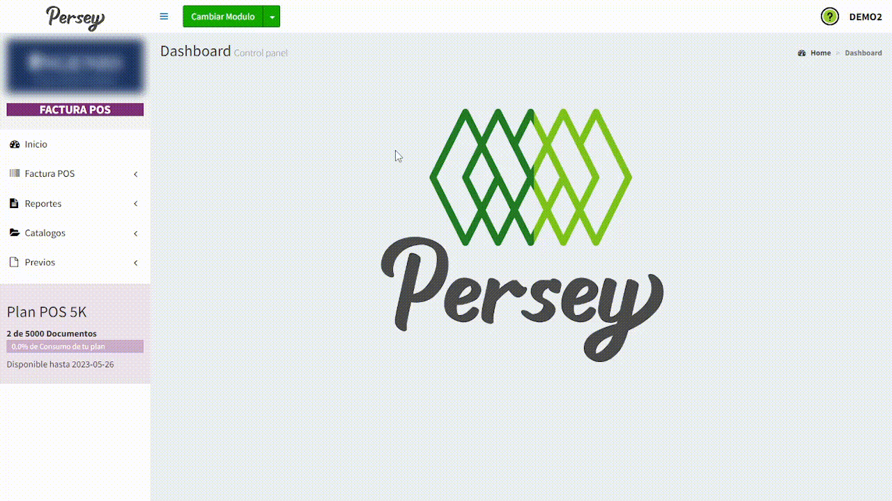

En el menú lateral izquierdo encontrará todas las opciones que podrá manipular en el modulo de Facturacion POS en el aplicativo de Persey.
Aqui se podrá guiar paso a paso sobre como generar una factura POS, tambien aprenderá a visualizar y imprimir su factura en impresora POS.
En esta sección se podrá crear facturas diligenciando un formulario con los datos correspondientes teniendo en cuenta la siguiente información en la imagen.

Para la creación de una factura POS es trascendental tener un cliente o proveedor creado con anterioridad. Si no tiene un cliente o proveedor, por favor registre un nuevo cliente o proveedor para dicha facturación; en caso de que ya tenga un cliente registrado, se ignora el Paso 1.
Para registrar un nuevo cliente lo puede hacer desde la misma ventana como se muestra en la siguiente imagen o dirigirse hacia el modulo de "Administracion en la sección de "Terceros".

Es importante que se diligencien los campos del formulario teniendo en cuenta, si es persona natural o persona juridica, posterior a eso clickee el botón "Guardar" en la parte inferior.
Por favor, los campos que tengan un asterisco (*), se deben llenar obligatoriamente.
Razón Social y Nombre Comercial: Tenga en cuenta que la razón social y el nombre comercial pueden ser diferentes dependiendo de la información de la empresa
Lista de Precios: Tenga en cuenta que la lista de precios es dependiente de la configuración de precios que asigno a los articulos y sus listas.
En caso de seleccionar "Persona Natural" se bloqueará el campo de "Razón Social".
A continuación, se mostrará la vista de como se bloquean los campos si selecciona "Persona Natural" y como diligenciar el formulario:
 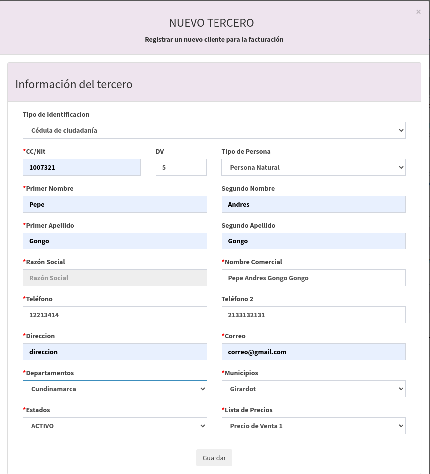
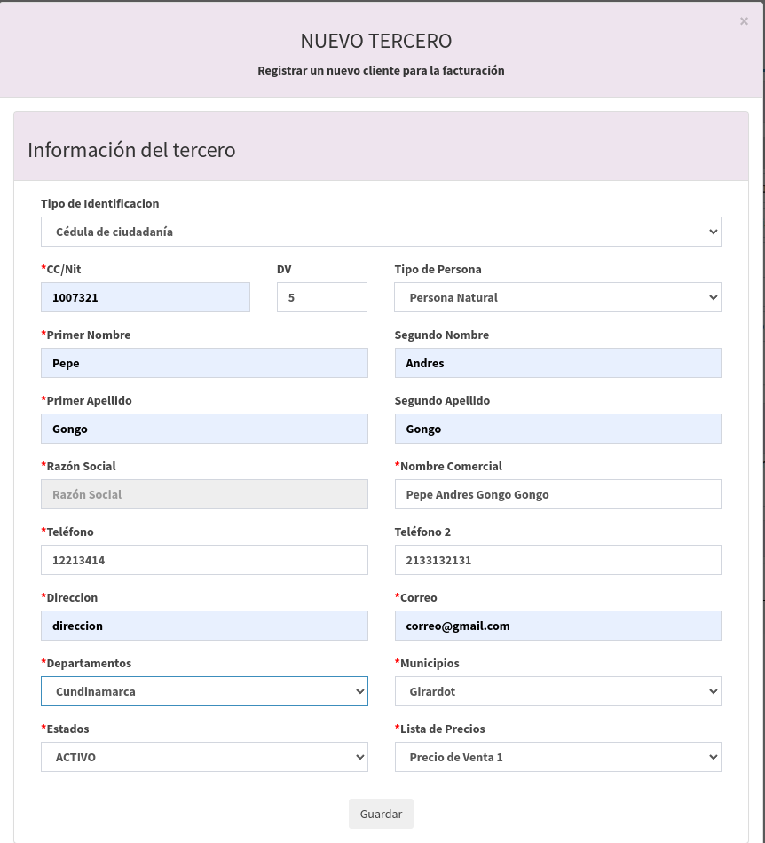
En caso de seleccionar "Persona Juridica" se bloquearán los campos de "Primer nombre de la persona", "Segundo nombre de la persona", "Primer apellido de la persona" y "Segundo apellido de la persona".
A continuación, se motrará la vista de como se bloquean los campos si selecciona "Persona Juridica" y como diligenciar el formulario:
 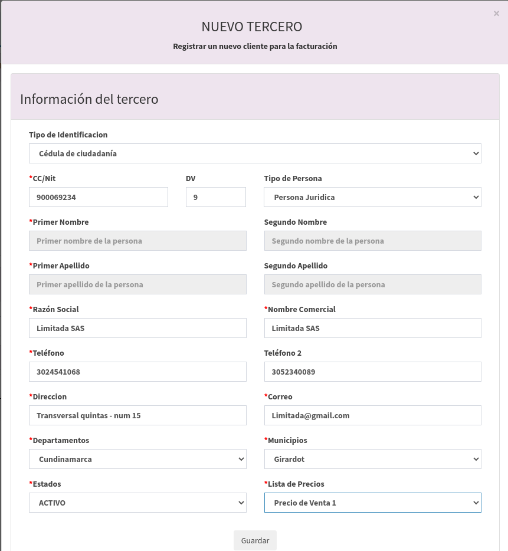
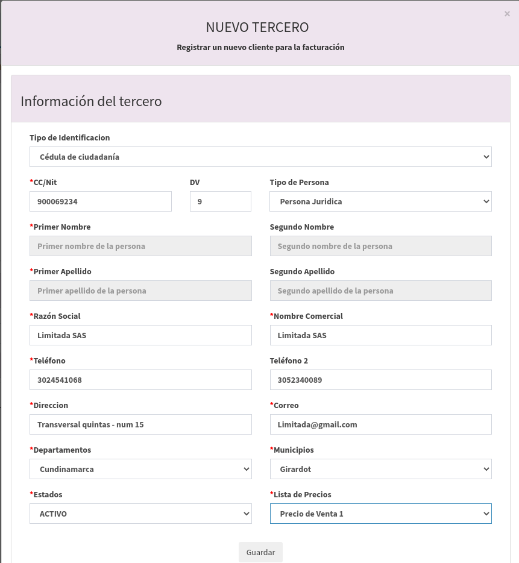
Por ultimo, se ilustrará como crear un cliente:

En esta sección debe diligenciar los campos correspondientes a la información del documento , hay que tener en cuenta que si da click donde dice "Seleccionar Prefactura" y la selecciona, automaticamente se le diligenciarán los campos del formulario con la prefactura y solo habria que darle a "Guardar Factura".
Nota: Es importante verificar los valores de las cantidades, descuentos y precios de los prouctos para proceder a guardarEn caso de no tener prefactura, se deben llenar todos los campos correspondientes teniendo en cuenta los siguientes pasos:
En ocasiones, puede que se necesite editar la factura sin si quiera haberla guardado, para lo anterior es necesario digirse hacia producto y, en la zona derecha del mismmo podrá editarlo o eliminarlo según sea el concepto. Cabe aclarar que si lo elimina, desaparecerá completamente de la factura, pero si se elige la opción editar, el producto saldrá de la sección de Productos registrados y se deberá agregar nuevamente para que se regitre en la factura.
NOTA: El anterior proceso funciona si se cargo una prefactura o si se está diligenciando una factura manualmente.Para eliminar un producto se debe seleccionar la opción de eliminar que corresponde al producto de interes
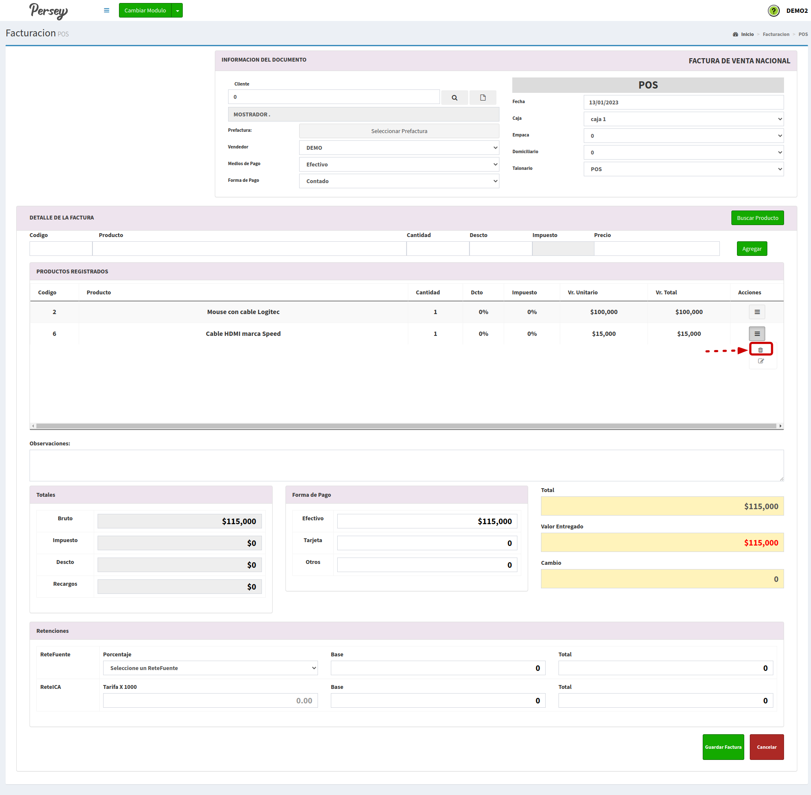Se debe seleccionar la opción de editar articulo
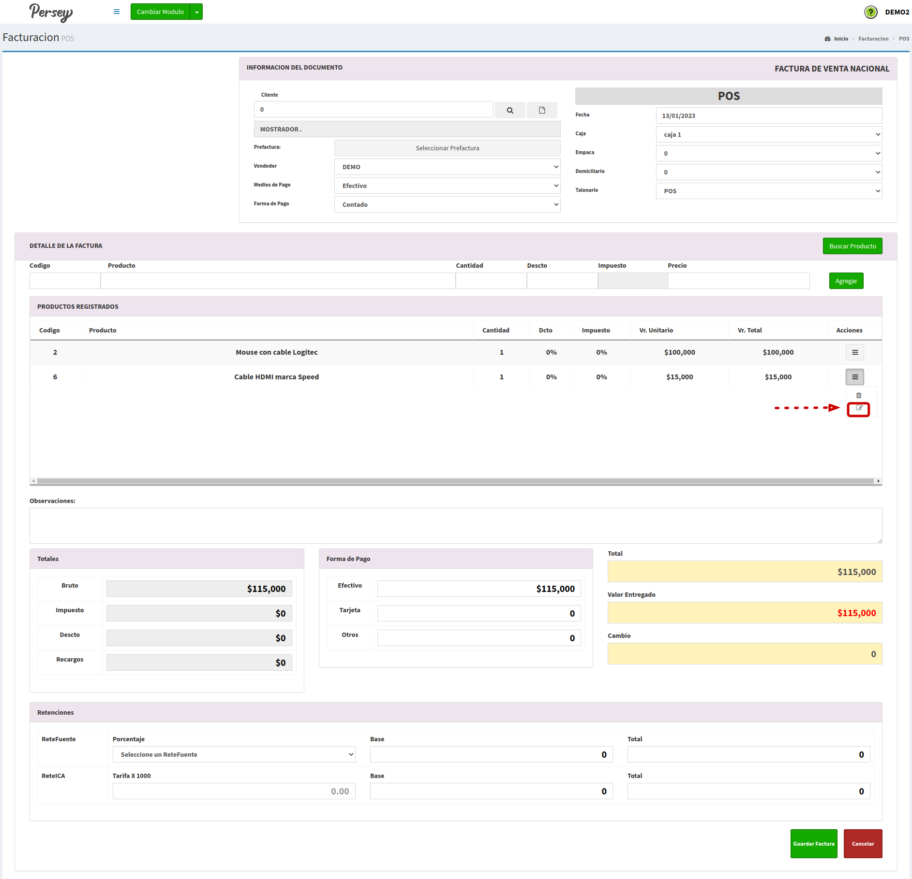Hay que tener en cuenta que el producto se direccioná hacia la sección "detalle de factura", por lo tanto, cuando se edite el producto, se debe dar al botón "Agregar" nuevamente y cuando este completamente seguro de los cambios, se debe dar en "Guardar Factura".
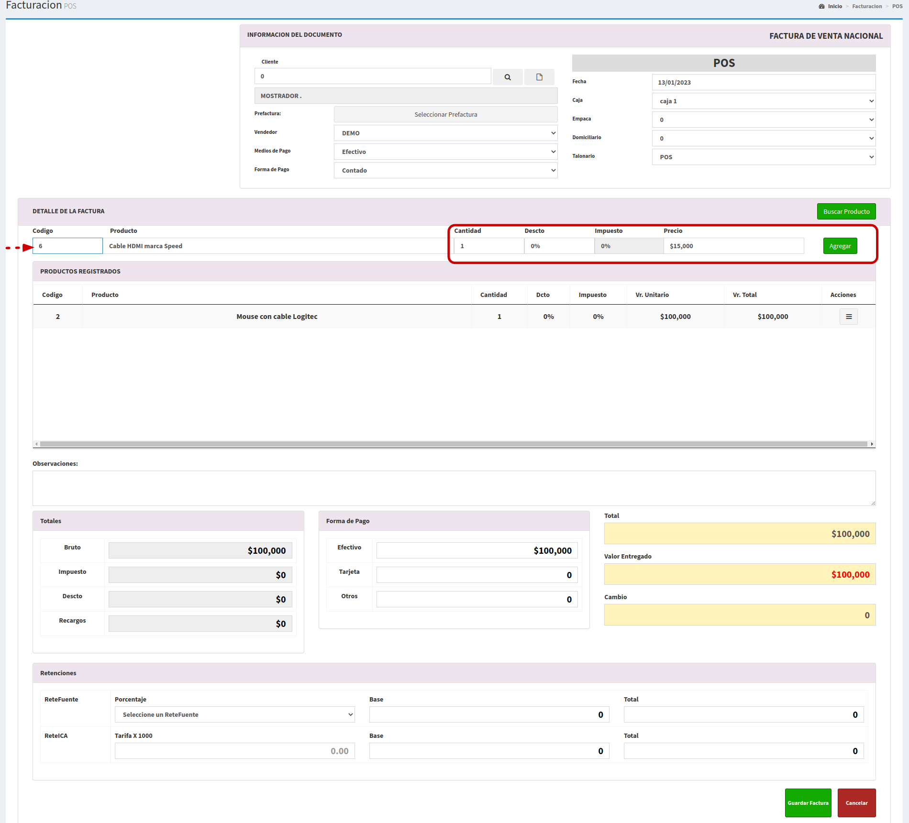Si la empresa tiene activado las retenciones le aparecerá un formulario al final donde las puede diligenciar teniendo en cuenta campos como: "Porcentaje de ReteFuente", "Tarifa X 1000 para la ReteICa", sus respectivas bases y los totales. .
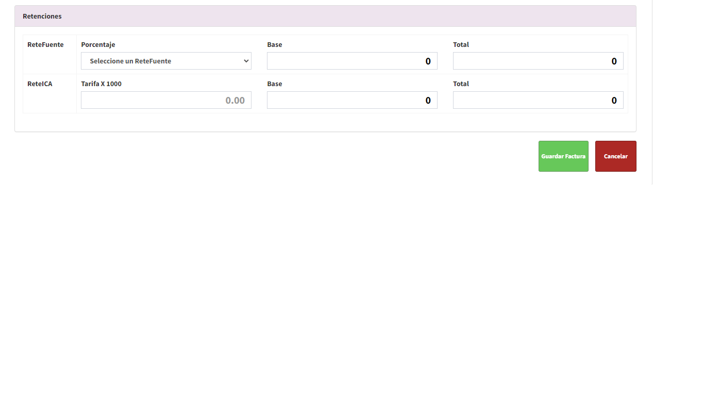
En esta sección podrá visualizar todas las facturas creadas, hacer una nota credito , duplicar la factura y imprimir la factura desde una impresora POS
Para ello dirijase hacia la parte izquierda y dele click sobre la sección "Listar".
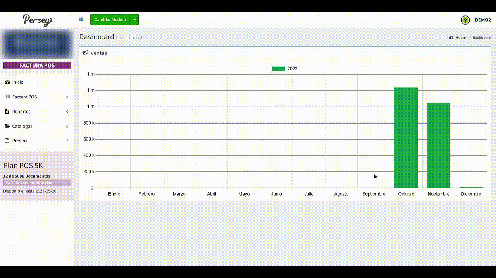Si desea visualizar la factura se debe dar click en "visualizar" en la lista de opciones de la factura.
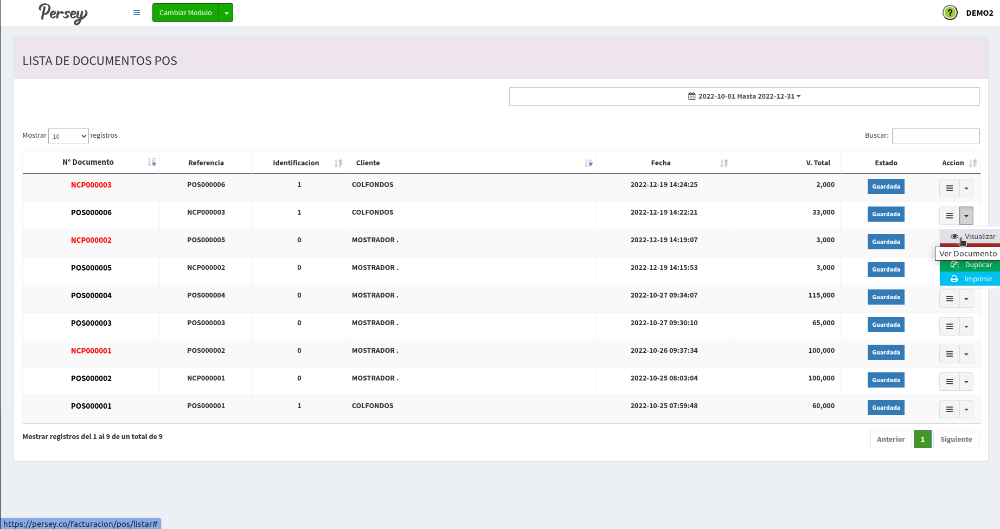Cuando visualice la factura le aparecerá de la siguiente manera:
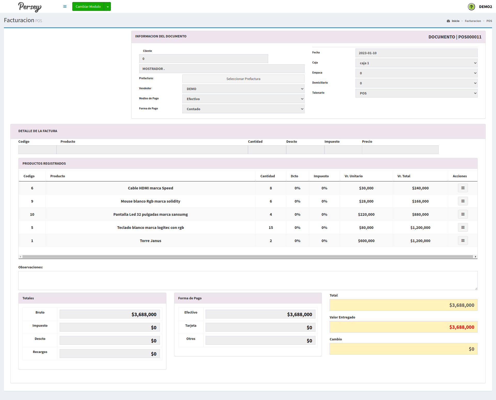Las notas credito son fundamentales para la anulación de una factura según sea el concepto. Si se desea hacer una nota credito, se tiene que ubicar sobre la factura a la cual le quiere realizar la configuración y darle click sobre la opción "Nota Credito". Hay que tener en cuenta que si la factura ya tiene una nota credito, la opción de ajuste no se mostrará
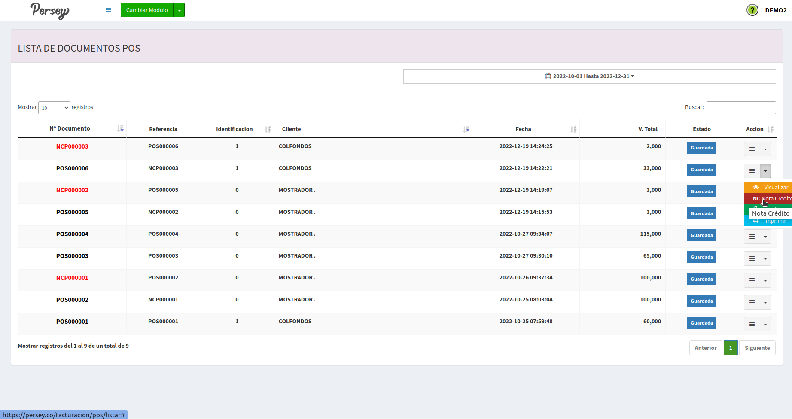Primero, se debe seleccionar el concepto de nota credito. Si el concepto es "Anulación de factura electrónica" simplemente se procede a darle al botón "Guardar Nota" como se muestra en la siguiente imagen

Si por otro lado, el concepto de nota de credito, corresponde a la opción "Devolución de parte de bienes, no aceptación de partes del servicio", es trascendental realizar la acción que mas convenga por cada producto de la factura.
Usted podrá modificar, elminar o anadir recargos a los productos

Tambien se tendrá la opción de duplicar la factura si dado el caso, se repite una transacción con los mismos elementos implicados y cabe aclarar que como no es la misma factura, usted podrá añadir, eliminar o editar información de los productos.
Hay que recordad que, se pueden duplicar facturas mas no pueden duplicar nota creditos
Por último el software provee la opción de imprimir la factura desde una impresora POS o una impresora Bluetooth.

En esta seccion se podrá visualizar todos los reportes por diferentes categorías como por periodos, por impuestos, por grupos y mas.
En esta seccion podrá visualizar todos los reportes por diferentes categorías como por periodos, por impuestos, por grupos y mas.
Es importante saber que para ver cualquier tipo de reporte es necesario dar click sobre la opción "Reportes" como lo muestra la siguiente imagen.
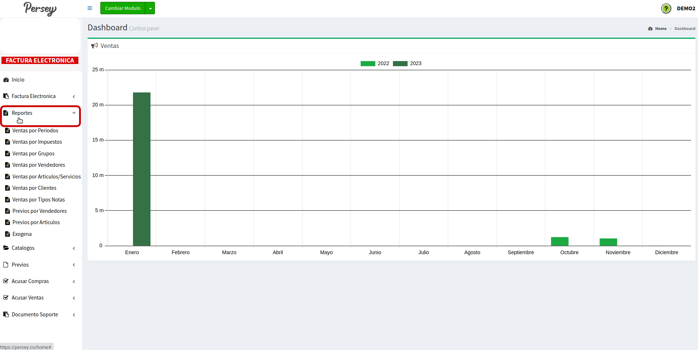Para poder ver este reporte, se debe diligenciar el formulario, escoger el talonario, la fecha desde-hasta y darle click en el boton que dice "VER". Tambien se puede descargar en PDF dandole click en el boton que dice "PDF".

Para poder ver este reporte se debe diligenciar el formulario, escoger el talonario, la fecha desde-hasta y darle click en el boton que dice "VER". Tambien se puede decargar en PDF o Excel dando click en el boton "PDF" o "Excel".
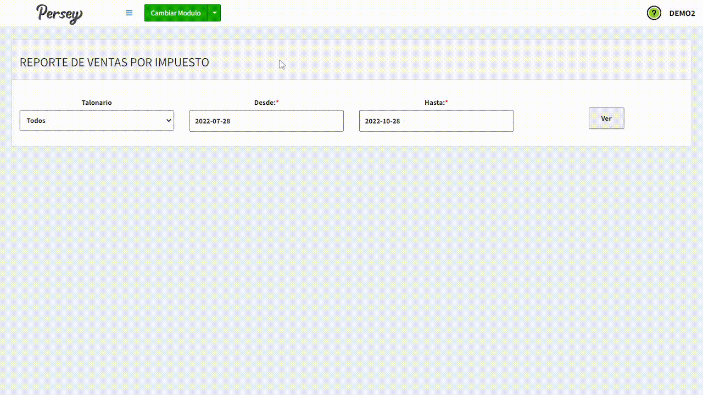Para poder ver este reporte se debe diligenciar el formulario, escoger el talonario, el grupo, la fecha desde-hasta y darle click en el boton que dice "VER". Tambien se puede descargar en PDF dandole click en el boton que dice "PDF".
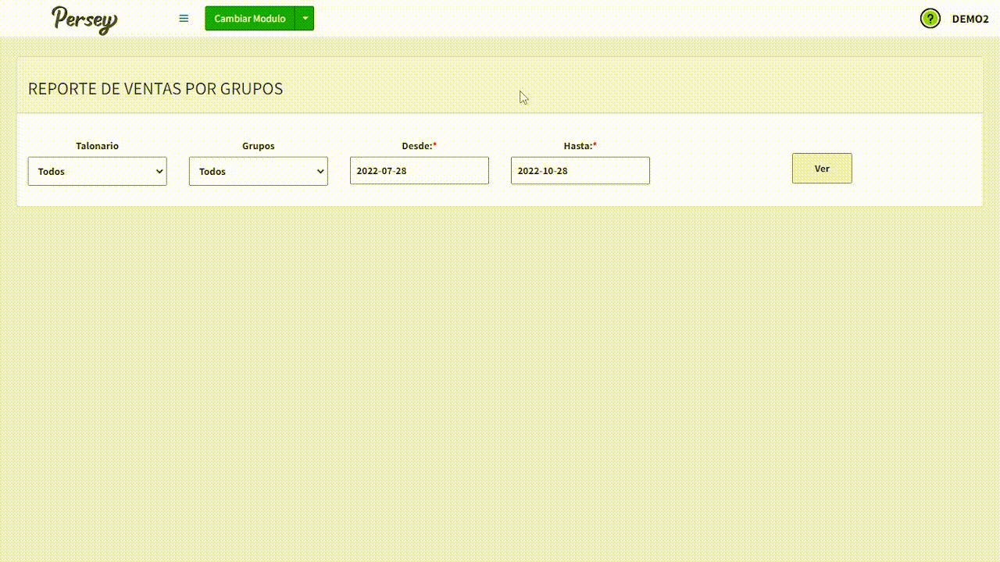Para poder ver este reporte se debe diligenciar el formulario, escoger el talonario, la fecha desde-hasta y darle click en el boton que dice "VER". Tambien se puede descargar en PDF dandole click en el boton que dice "PDF".
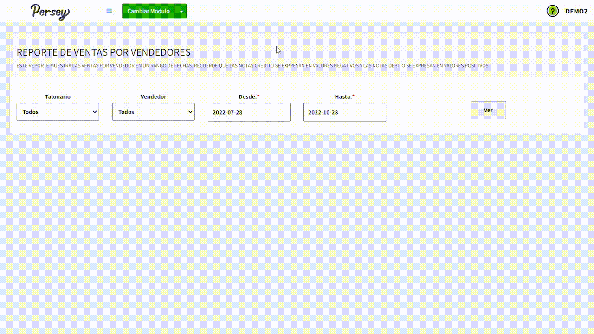Para ver este reporte se debe diligenciar el formulario, escoger el talonario, la fecha desde-hasta y si se requiere un reporte detallado o resumido, luego darle click en el boton que dice "VER". Puede filtrar los reportes dependiendo si se requiere por articulos, cliente y fecha. Tambien se puede descargar en PDF dandole click en el boton que dice "PDF".

Para ver este reporte se debe diligenciar el formulario, escoger tipo de nota, la fecha desde-hasta y luego darle click en el boton que dice "VER". Tambien puede descargar el reporte en PDF dando click en el boton "PDF".

Para ver este reporte se debe diligenciar el formulario, escoger el talonario, clientes, la fecha desde-hasta y darle click en el boton que dice "VER". Tambien se puede descargar en PDF dandole click en el boton que dice "PDF"

Para ver este reporte debe diligenciar el formulario , escoger el talonario, el vendedor, la fecha desde-hasta y si quiere un reporte detallado o resumido, luego darle click en el boton que dice "VER". Tambien puede descargarlo en PDF dandole click en el boton que dice "PDF"

Para ver este reporte debe diligenciar el formulario , escoger el talonario, el articulo, la fecha desde-hasta y si quiere un reporte detallado o resumiodo luego darle click en el boton que dice "VER". Tambien puede descargarlo en PDF dandole click en el boton que dice "PDF"
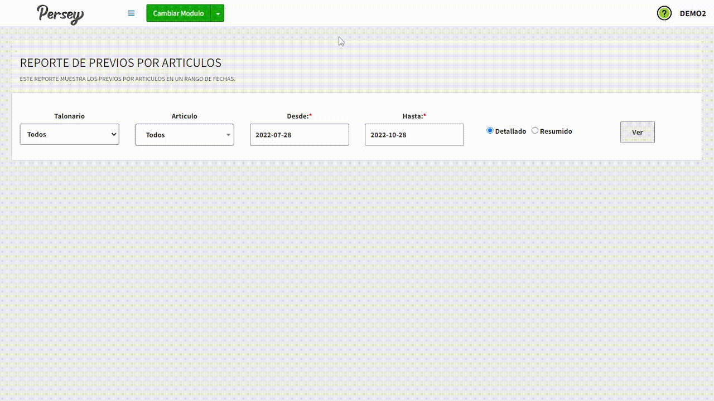Para ver el reporte de información exogena de venta solo debe seleccionar el año y darle click en el boton que dice "VER", Tambien puede descargarlo en formato Excel dandole click en el boton "Excel"

En esta seccion se podrá visualizar todos los terceros que tiene registrados, tambien podrá editarlos, eliminarlos y agregar nuevos
Es de vital relevancia conocer que un tercero puede ser un cliente o un proveedor. Le aparecerán todos los terceros que tenga en una lista, los terceros se pueden modificar dando click en el boton amarillo y crear uno nuevo dando click en el boton que dice "NUEVO"

Por favor, los campos que tengan un asterisco (*), se deben llenar obligatoriamente.
Razón Social y Nombre Comercial: Tenga en cuenta que la razón social y el nombre comercial pueden ser diferentes dependiendo de la información de la empresa
Lista de Precios: Tenga en cuenta que la lista de precios es dependiente de la configuración de precios que asigno a los articulos y sus listas.
En caso de seleccionar "Persona Natural" se bloqueará el campo de "Razón Social".
A continuación, se mostrará la vista de como se bloquean los campos si selecciona "Persona Natural" y como diligenciar el formulario:
En caso de seleccionar "Persona Juridica" se bloquearán los campos de "Primer nombre de la persona", "Segundo nombre de la persona", "Primer apellido de la persona" y "Segundo apellido de la persona".
A continuación, se motrará la vista de como se bloquean los campos si selecciona "Persona Juridica" y como diligenciar el formulario:
Por ultimo, se ilustrará como crear un cliente:
En esta seccion se podrá registrar una prefactura y tambien podrá visualizar todas las prefacturas que ha registrado
Para crear un nuevo previo se debe escoger o crear el cliente(tercero). Buscar los productos que desea añadir a su prefactura y darle guardar

Aqui apareceran todos los previos o prefacturas que haya generado y sus respectivas opciones
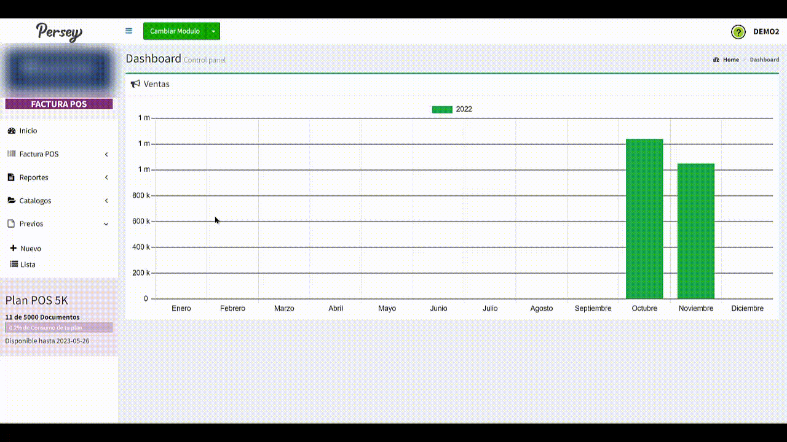Cuando liste un previo, su vista será de la siguiente forma
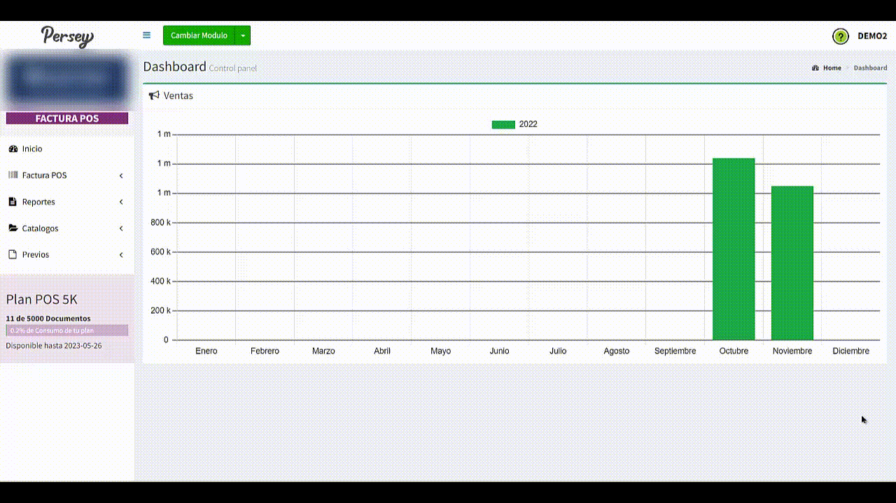Cuando liste un previo, usted tendrá la opción de agregar, modificar o eliminar sus productos
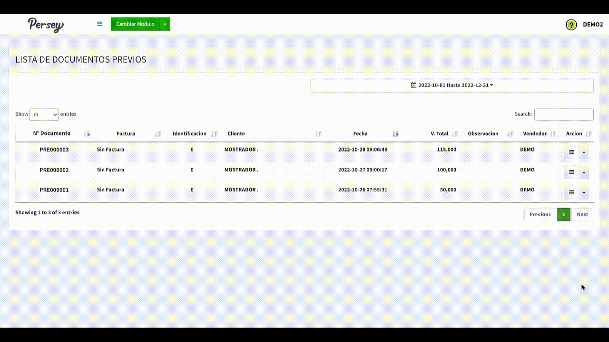 No olvidar siempre dar al botón "Guardar" para la persistencia de los cambios realizadosEn esta sección podrá vincular la balanza a los procesos de facturación POS, prefactura, Inventario inicial, entradas y salidas.
Para iniciar el proceso se necesita tener la balanza conectada al equipo donde se realizará todo el proceso. Se puede verificar que el dispositivo esté correctamente conectado y siendo reconocido a través del administrador de dispositivos.
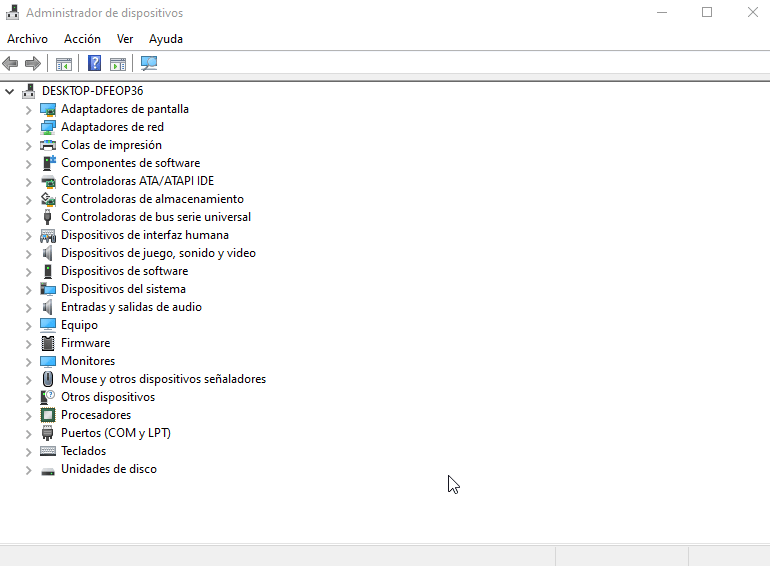Descargar el plugin de Aurora directamente desde la página ofical de Sistematizar
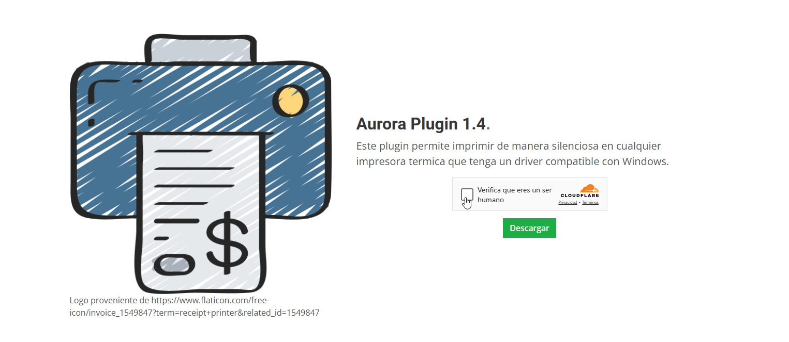Ejecutar el archivo AuroraPlugin.exe. La contraseña para poder ejecutar el instalador debe consultarse con el administrador
Si aparece un error al instalar, es porque el plugin de Aurora ya se encontraba instalado y siendo ejecutado, en este caso debemos cerrarlo desde iconos ocultos y continuar con la instalación.
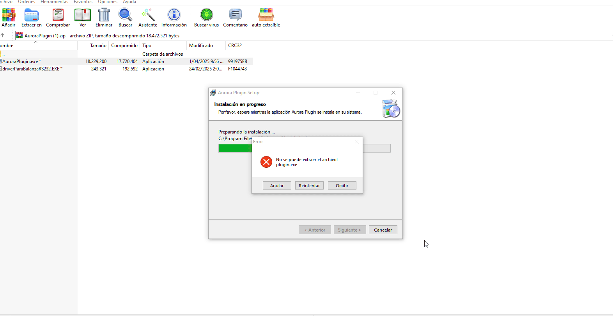En el módulo de administración de Persey, en el menú de Catalogos-Parametros, verificamos que Aurora este siendo utilizado como plugin de reconocimiento de dispositivos en la pestaña Prefactura/PE.
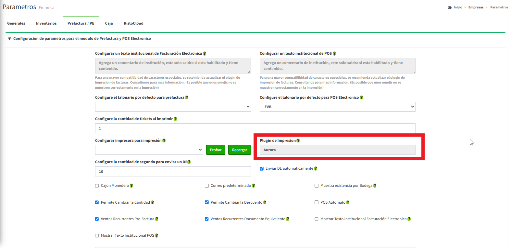Es recomendable utilizar el navegador Google Chrome para asegurar que se reconozcan los dispositivos de impresión
En la parte inferior, en la sección Obtención de Peso por Balanza (Procedimiento por Equipo), debemos configurar la lectura y reconocimiento de la balanza.
Se configura el puerto donde se está escuchando la balanza (se verifica en panel administrador de dispositivos), se establece una velocidad de transmisión serial (por defecto es 9600), y en Formateo de peso se configura en Remover caracteres no numéricos para poder usar la balanza en los procesos de facturación.
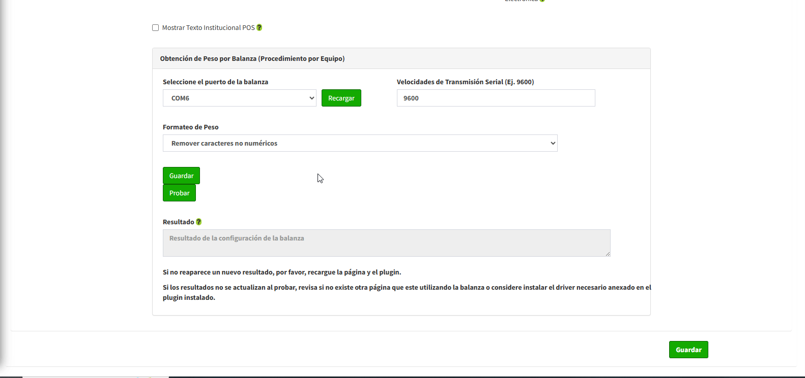Dar click en probar para probar que los valores de la balanza se esten leyendo correctamente en Persey.
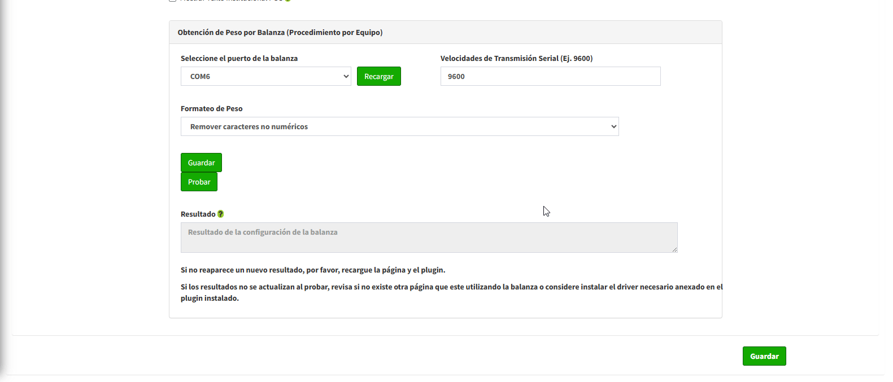En esta sección se demostrarán las pruebas de facturación con la balanza
Los articulos que se quieran facturar usando la balanza, deben tener la opción Granel activada (Módulo inventarios - Articulos Carga Agil)
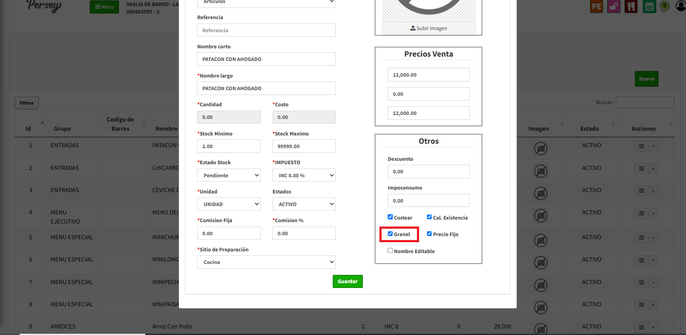Seleccionamos el producto
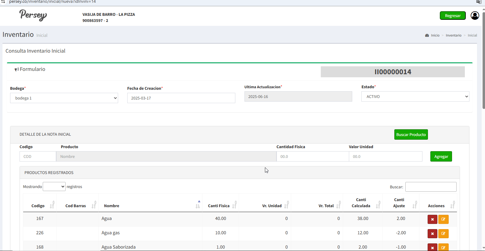